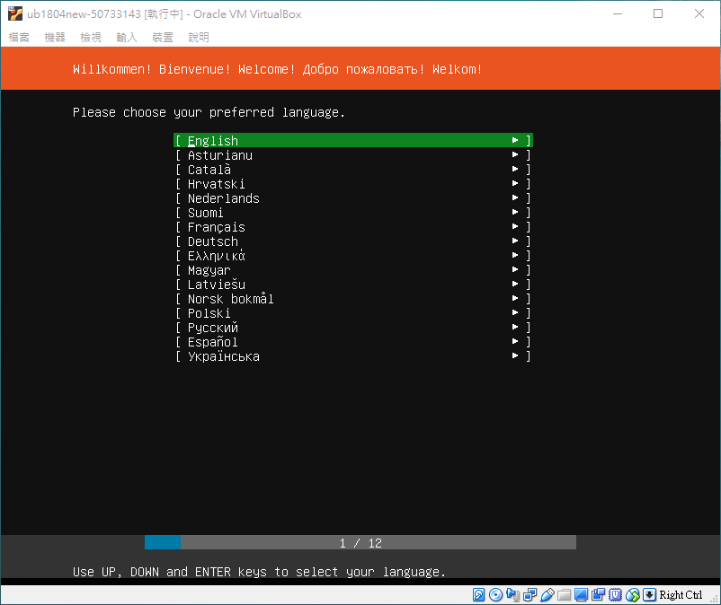

如何安裝作業系統 <<
Previous Next >> How to Install windows10
How to Install Ubuntu
先去官網下載Ubuntu的安裝映像檔https://www.ubuntu.com
這邊以Ubuntu Server 18.04 LTS作為示範
點開Download的下拉選單後下載Ubuntu Server
Desktop是有GUI介面的 Server是純命令列介面
下載完成後打開Oracle VM VirtualBox點擊新增

名稱自行命名 機器資料夾如果沒有要放其他地方就預設就好
類型選Linux 版本選Ubuntu (64-bit)
記憶體大小越大越好以不影響主電腦運行為優先
如果沒有64位元可能是電腦沒有開啟VT或是CPU不支援VT
硬碟就選立即建立虛擬硬碟 之後按建立

檔案位置沒有特殊需求一樣預設就好
檔案大小我們習慣設定500GB 然後選擇動態配置這樣用多少檔案就多大
固定的話你分配多少硬碟就會預先分配多少這樣很佔空間
硬碟檔類型選擇VMDK方便以後可以將虛擬轉至實體使用 按下建立後
會在左方多出一個虛擬機 這時可以先進行設定 也可以先安裝完後再設定
這邊先不設定直接點擊啟動
然後它會跳出一個視窗讓你選擇安裝系統的映像檔 選完之後按啟動

這邊選擇系統語言 選擇English

下一步 這邊是鍵盤的語言設置一樣都是English
下一步 這邊選第一個安裝 其他兩個是多主機雲端協同用的
下一步 這邊是網路設定 目前是以NAT上網 安裝完後再設定 所以直接下一步
下一步 這邊是Proxy的設定 這邊是用這個http://140.130.17.4:3128
若不使用可直接留白
下一步 這邊是Ubuntu下載鏡像檔的網址 保持預設就好
下一步 這邊是分割硬碟然後格式化這邊選第一個整顆硬碟格式化
再來選擇要安裝的硬碟
這邊確認OK就下一步

它會問你確認要格式化嗎 選Continue
下一步 這邊是設定名字以及登入的帳號密碼
第一第二項是名字 第三是帳號 第四是密碼 第五是確認密碼
下一步 是否要安裝OpenSSH 這邊選擇要
下一步 這邊選擇想要安裝的伺服器組合 如果不要直接下一步就好 就會開始安裝了
有一條槓槓再轉就是正在安裝
安裝完後選Reboot重開就安裝完成了
剛開機會需要輸入帳號密碼
使用sudo都需要輸入密碼
關機使用 sudo shutdown -h now 關機並關電源
使用 sudo halt 是關機但不關電源
如何安裝作業系統 <<
Previous Next >> How to Install windows10